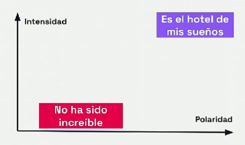

Análisis de Sentimiento¶
En el análisis de sentimientos se puede interpretar, analizar y categorizar las opiniones y emociones humanas expresadas en forma de texto.
Categorización: positivo, negativo, neutral.
Podemos considerar el análisis de sentimiento como una tarea de clasificación etiquetando las entradas como positivas y negativas por ejemplo. Otra posibilidad es tratar el análisis de sentimiento como una tarea de regresión, es decir predecir un valor continuo en vez de una categoría.
El análisis de sentimiento tiene en cuenta dos variables:
-
Polaridad: es un comentario positivo o negativo.
-
Intensidad: diferentes grados de la polaridad.

Aplicaciones del análisis de sentimiento¶
-
Redes sociales: analiza los comentarios en tiempo real para ver reacciones de la gente o reputación.
-
Reseñas de productos o servicios.
-
Encuestas en línea: para comprender mejor las preferencias de los clientes.
-
Decisiones de inversión.
Métodos para el análisis de sentimiento¶
Una manera básica y sencilla es la detección de palabras clave como bueno, malo, pésimo,... pero no comprende el contexto.
El método con Aprendizaje automático, basado en técnicas de IA, construye un modelo que aprende a través de miles de ejemplos a distinguir entre un comentario positivo y otro negativo.
Descargamos el módulo para reseñas en español
! pip install sentiment-analysis-spanish
from sentiment_analysis_spanish import sentiment_analysis
model_sentiment = sentiment_analysis.SentimentAnalysisSpanish()
def sentimiento(texto, sentiment=model_sentiment):
return sentiment.sentiment(texto)
titulos_sentimiento["prediccion_ia"] = titulos_sentimiento["title"].apply(lambda texto: sentimiento(texto))
def ajusto_predicciones_ia(prediccion):
if prediccion < 0.5:
return 0
else:
return 3